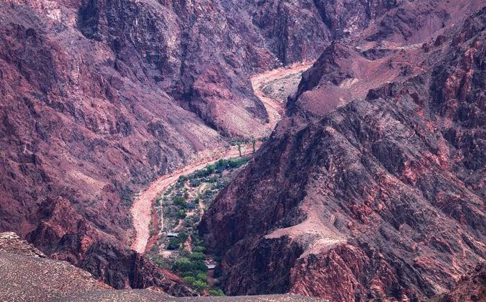

Breaking News
 September 1
September 1
byNoah Grayson
A powerful flash flood in Arizona’s Grand Canyon has killed two people, left others missing and damaged critical park infrastructure as rescue teams continue operations
Two people are dead and at least one more is missing after a powerful flash flood roared through the Grand Canyon National Park in Arizona, with rescue teams still combing through damaged areas of the park. Fast-moving water, mud and debris poured through popular hiking routes in the Bright Angel Canyon and Phantom Ranch area over the weekend as heavy rain swamped the narrow canyon landscape. About 80 people were rescued or evacuated from the affected areas. The disaster caused extensive damage to the park's infrastructure, including trails, bridges, and a key water line that serves parts of the Grand Canyon.
The flooding began on Aug. 29 near Bright Angel Creek and Phantom Ranch, one of the most popular areas inside the Grand Canyon. Flood waters carried rocks, trees and debris through the canyon corridors, causing major damage to the event, the National Park Service said. For safety reasons, several areas were closed immediately. This is a popular area for hikers and campers, and visitors exploring the inner trails of the canyon. Flash floods in desert areas are particularly deadly because they are so sudden. Rain can fall miles away from where flooding eventually happens.
Authorities said two people were confirmed dead in the flooding, and efforts were underway to find other missing visitors. One victim has been identified as a man from Texas who was fishing and hiking with friends in the canyon area. Helicopters, nite vision equipment and ground searches were used by rescue teams to find people hit by the disaster. Officials say about 80 were rescued or evacuated after the flood. Search teams have been scouring trails, river areas and remote sections of the canyon where visitors may have been caught in fast-rising water.
Rescue teams search for the missing in difficult conditions. Some infrastructure sections, including footbridges and paths used by hikers, were damaged or destroyed by floodwaters. Rescue workers in the Colorado River area faced additional dangers from floating debris and damaged structures. More storms have stoked fears of further floods, and weather conditions are making operations even more difficult. Officials warned visitors to stay out of closed areas and be aware of unstable conditions.
The flood really messed up the water supply system of the Grand Canyon. Officials say the flooding damaged or destroyed about 40 percent of the park’s Transcanyon Waterline. The pipeline is a critical piece of infrastructure that delivers water to the park’s facilities. Storm damage forced suspension of overnight services, including lodging operations in the impacted areas as well as emergency water restrictions. The damage comes as the park is in the midst of a large modernization project to its water system.
The Grand Canyon flood occurred during Arizona’s summer monsoon season when a brief heavy rainstorm can turn the desert terrain into a dangerous place. Meteorologists said canyon environments can be easily overwhelmed by heavy rain over a short period of time because narrow channels form when water runs down steep terrain. The charred terrain usually has less plant cover to absorb the precipitation, so the runoff is faster, and the landscape’s recent burn scars are more vulnerable. Officials are watching weather forecasts closely, and more storms could be on the way.
The tragedy highlights the rising dangers at popular outdoor locations as more frequent and severe extreme weather becomes the new normal. The Grand Canyon draws millions of visitors annually, many of whom venture into remote locations where access for emergency services is difficult. Flash floods can occur with little warning and are one of the most dangerous natural hazards in the canyon. Park officials regularly advise visitors to watch the weather, avoid narrow washes during rainstorms, and be aware of the dangers of canyon environments.
Some sections of the Grand Canyon remain shut as officials review the damage and conduct rescue missions. Officials are evaluating safety conditions and have closed Phantom Ranch, Bright Angel Campground and sections of affected trails. Park warnings have been highlighted to visitors, and they have been requested not to enter flood affected areas. The National Park Service is also asking anyone with information about missing visitors to call authorities.
The Grand Canyon flood is one of the worst weather-related emergencies in recent park history. Rescue teams are combing through the damaged landscape, and officials are focused on finding people who are missing and restoring vital services. The disaster, another warning of the dangers of wild weather in remote natural environments. Search and rescue efforts continue as authorities look for missing visitors, repair damaged infrastructure, and protect the thousands of people who visit the Grand Canyon each year.

Noah Grayson is a U.S. daily news reporter covering national stories, breaking events, and human-interest developments.